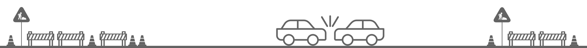

Work Zone Interagency
Traffic Data Modeling and Analysis
NYU CUSP Capstone project 2020
Overview
Temporary work zones for roadway constructions have the potential to significantly impact mobility and safety for all roadway users. An increase in the number of people using local streets because of work zone diversion plans may increase the likelihood of crashes, including crashes involving vulnerable populations (e.g., cyclists, seniors, and individuals with disabilities). This project brings together disparate data sets to allow for a more comprehensive overview of collisions and work zones.
Road construction events are a necessary part of keeping road infrastructure in good condition but can pose significant safety problems when implemented. Transportation authorities in NYC seek a better understanding of the type, severity, and extent of mobility impacts associated with work zones. This project proposes using a k-means clustering approach to predict the probability of a vehicle collision occurring in the proximity of a road construction event (i.e work zone). The proposed clustering method is applied to over 20,000 construction and emergency construction events of relatively short duration in New York City to identify types of work zones that may present greater safety risks. The results of this project are in service of enabling practitioners to employ appropriate mitigation strategies during project programming, design, and in the development of effective transportation management plans.